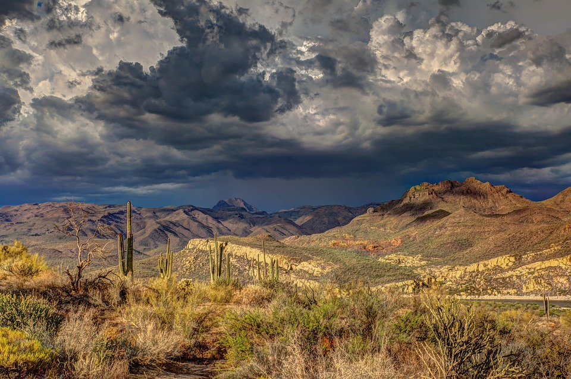
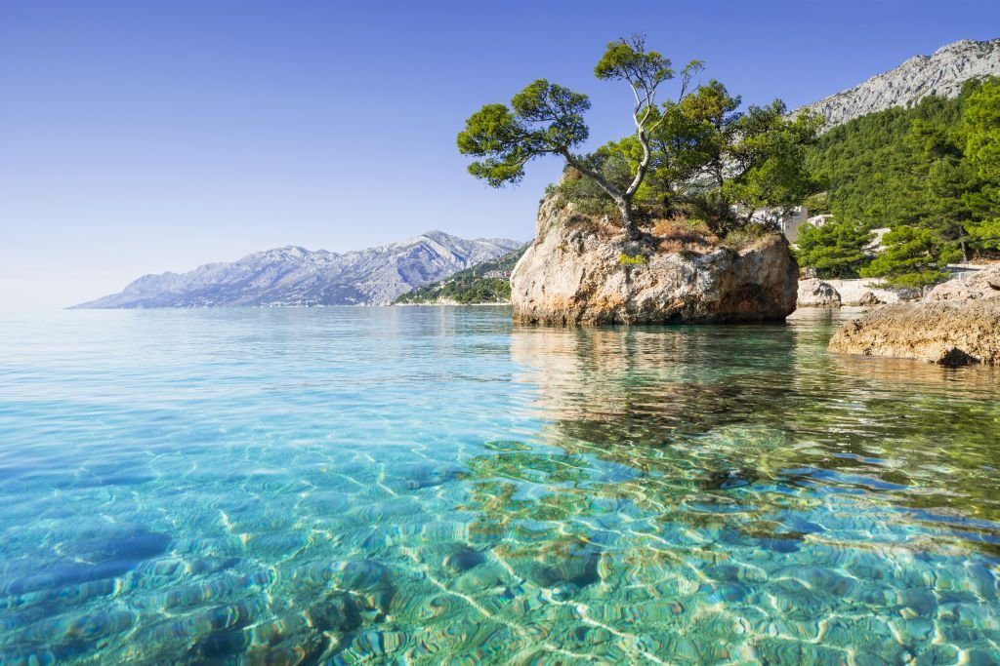
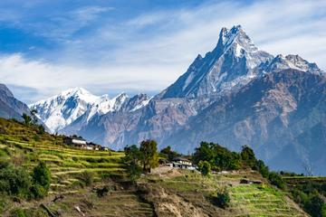
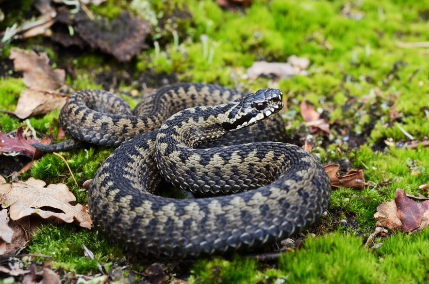
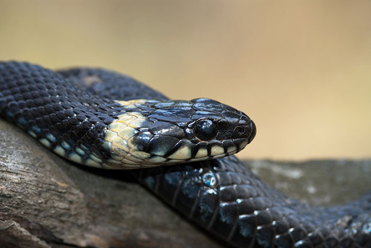

Vrske kač
Poznamo tri različne vrste kač:
Kopenske kače
Prebivajo na kopnje
(na celini)
Slanovodne kače
Prebivajo v slanih vodah
(oceani)
Sladkovodne kače
Pribivajo v sladkih vodah
(reke,jezera,...)
Na kratko o kačah
Kače (znanstveno ime Serpentes) so mesojedi plazilci brez okončin, ki jih uvrščamo v kraljestvo živali (ANIMALIA) , spadajo v deblo strunarjev (CHORDATA) , prav tako v razred plazilcev (SAUROPSITA), v red luskarjev (SQUAMATA), ter vpodred kač (SERPENTER) , torej so sorodne kuščarjem, krokodilom in želvam.
Prebivališča
Trenutno je znanih okrog 3.150 vrst kač, ki jih združujemo v 456 rodov. Živijo na vseh celinah, razen Antarktike in večine manjših otokov.

Puščavi
Pribivajo tudi po neznosnih okoljih kot so puščave, kjer ni skoraj nič vode za preživetje.

Morju
Prebivajo tudi v odprih ter temnih vodah kot so naprimer morva ter oceani.

Himalaji
Prebivajo tudi v visikogorjih kot so Himalaja, Alpe, kjer primanjkuje kisika.
Kače v Sloveniji
V Sloveniji živi 11 vrst kač, od tega so le tri strupene. Slovenske strupenjače lahko od daleč prepoznamo po čokatem telesu, zelo kratkem repu in ozki zenici, večinoma pa tudi po značilnem cikcakastem vzorcu na hrbtu. Vendar je ta lahko pri nekaterih osebkih gada in pri laškem gadu nepovezan in tvori prečne proge, pri obeh vrstah pa so pogosti tudi popolnoma črni primerki brez vzorca. Polstrupene kače imajo strupnik nameščen globoko zadaj v ustni votlini in zato človeku niso nevarne, v Sloveniji pa prevladujejo kače, ki so popolnoma brez strupa.

Navadni gad (znanstveno ime Vipera berus) zraste od 60 do 70 cm. Ovalna glava polagoma prehaja v trup. Na zgornjem delu glave je temna lisa v obliki črke X ali V. Glava je pokrita z majhnimi luskami, vidne so največ 3 večje ploščice. Je strupena kača in se od nestrupenih loči po navpični, zoženi zenici, čokatosti in cik - cak vzorcu na hrbtu. Živi na vlažnih hladnejših območjih z velikimi temperaturnimi spremembami med dnevom in nočjo, vendar se rad zadržuje na sončnih mestih.
Navagni gad

Belouško prepoznamo po dveh belih, rumenih ali oranžnih lisah tik za glavo (ob straneh), ki sta ostro omejeni s temnimi lisami in po katerih je kača dobila ime. Hrbet je zeleno ali rjavkasto siv s temnimi pegami in svetlimi lisami.Na trebušni strani so prečne črne proge na svetli podlagi. Oko je veliko z okroglo zenico, pred njim leži le ena predočesna ploščica. Običajno zraste okoli 90 do 110 centimetrov (samice so večje od samcev), vendar so bili najdeni tudi primerki, dolgi do dveh metrov.
Belouška